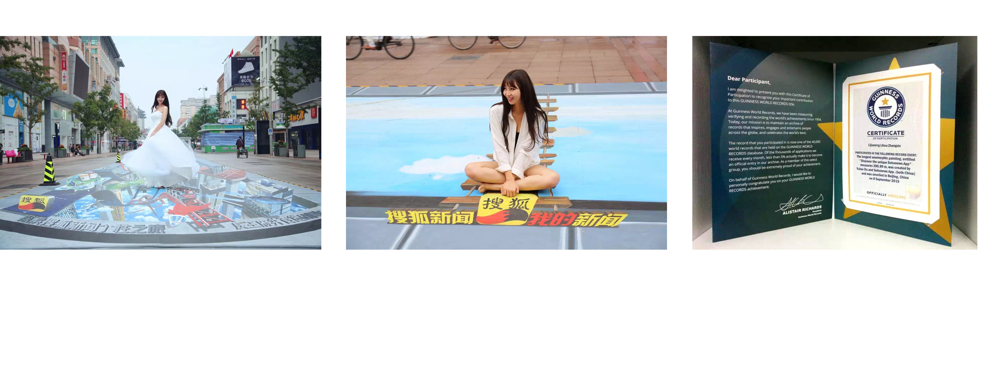
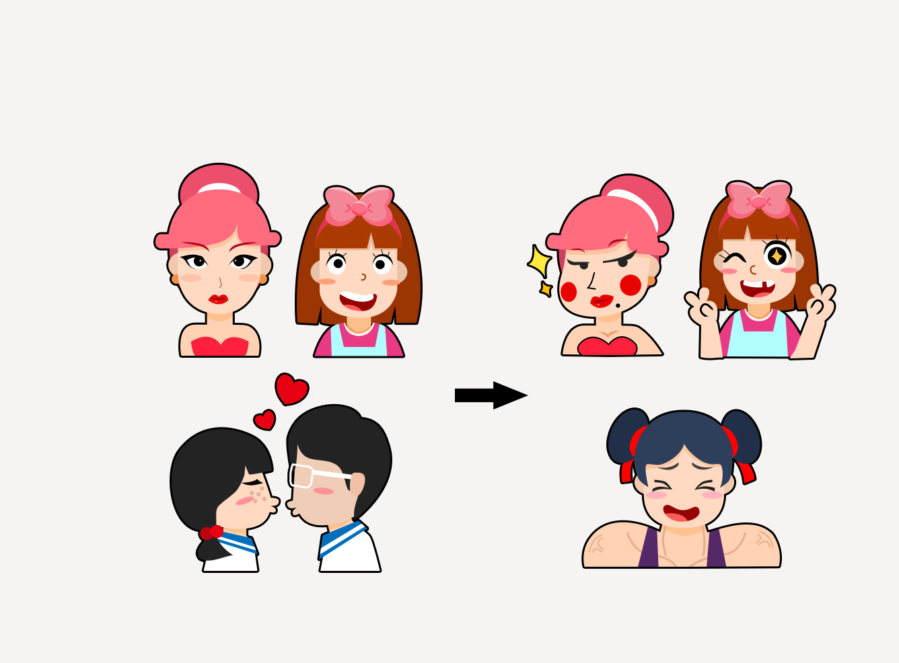

14年的暑假，在学校的图书馆中我读到了一本描述搜狐新闻客户端设计过程的书籍：《设计之下》。
这本书虽然语言朴素但却满满都是干货：让我第一次完整的了解了App设计的流程，第一次对用户
体验有了新的感触和思考，第一次对交互设计有了模糊的认知。
有幸在15年的4月，来到了搜狐新闻客户端UED实习。在实习中，我主要负责有两个方面。视觉上，负责搜狐新闻客户端iPhone/Android等移动平台的GUI设计，以及H5/PC/推广页等的设计；在用研的部分，负责收集用户统计反馈，进行归纳整理。
世界最长3d地画活动的h5设计
最长3d地画活动是搜狐新闻客户端与王府井大厦合作的项目。
纵贯王府井步行街的3D画全长399.889米，打破现有世界记录。而透过地画上“探索搜狐新闻个性之旅”的字样，
用户可以通过搜狐新闻客户端进行互动，将线上线下一体化营销的模式引入到了3D画中。
我负责该活动的线上h5设计，获得吉尼斯认证证书。

好的设计不一定是“美”的设计
在调研以及和市场团队的交流中，我了解到用户对于主流美观的设计已经审美疲劳。而那些有特色、不走“寻常路”的设计因为新奇，反而更容易搏得眼球，获得更高的关注度。
因此在进行设计评审的时候，整个视觉风格做了多次修改。最终选择了色彩对比强烈、形象夸张的视觉风格。

H5的设计实现
该h5的故事背景是用户参与活动，担当搜狐新闻的实习记者，参与报道世界最长3d地画的活动。
用户通过摇一摇打开H5页面，第一页展示活动相关说明。下滑进入频道页，有女神频道、男神频道、女汉子频道、萌妹子频道、大叔频道等五个频道，用户选择其中一个频道。
根据不同频道类型展示不同的活动页面，现场拍出世界最长3d地画的照片，分享到朋友圈即可进行抽奖。
这段小视频是录屏完成，速度加快了60%。